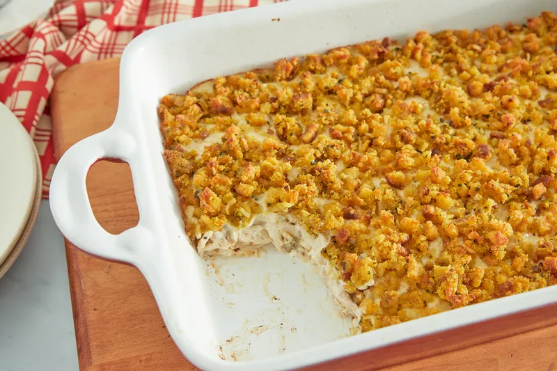

lasagna Recipe

Lasagna is a classic Italian dish made with layers of tender pasta, rich meat sauce, creamy ricotta cheese, and gooey melted mozzarella. Perfect for family dinners or special occasions, this hearty dish is sure to satisfy any craving for comfort food.
Ingredients
- 12 lasagna noodles
- 1 pound ground beef
- 1 onion, chopped
- 2 cloves garlic, minced
- 1 (24 oz) jar marinara sauce
- 1 (15 oz) ricotta cheese
- 2 cups shredded mozzarella cheese
- 1/2 cup grated Parmesan cheese
- 1 egg
- Salt and pepper, to taste
- Fresh basil or parsley for garnish (optional)
Steps
- Preheat oven to 375°F (190°C).
- Cook lasagna noodles according to package instructions, then drain.
- In a skillet, cook ground beef, onion, and garlic until meat is browned. Drain excess fat.
- Add marinara sauce to the meat and simmer for 5-10 minutes.
- In a bowl, mix ricotta cheese with the egg, salt, and pepper.
- Spread a layer of meat sauce on the bottom of a baking dish.
- Place a layer of noodles on top of the sauce.
- Spread a layer of the ricotta mixture over the noodles.
- Sprinkle a layer of mozzarella cheese.
- Repeat layers until all ingredients are used, ending with mozzarella and Parmesan on top.
- Cover with foil and bake for 25 minutes.
- Remove foil and bake an additional 20-25 minutes until cheese is bubbly and golden.
- Let it cool for 10 minutes before serving. Garnish with basil or parsley.